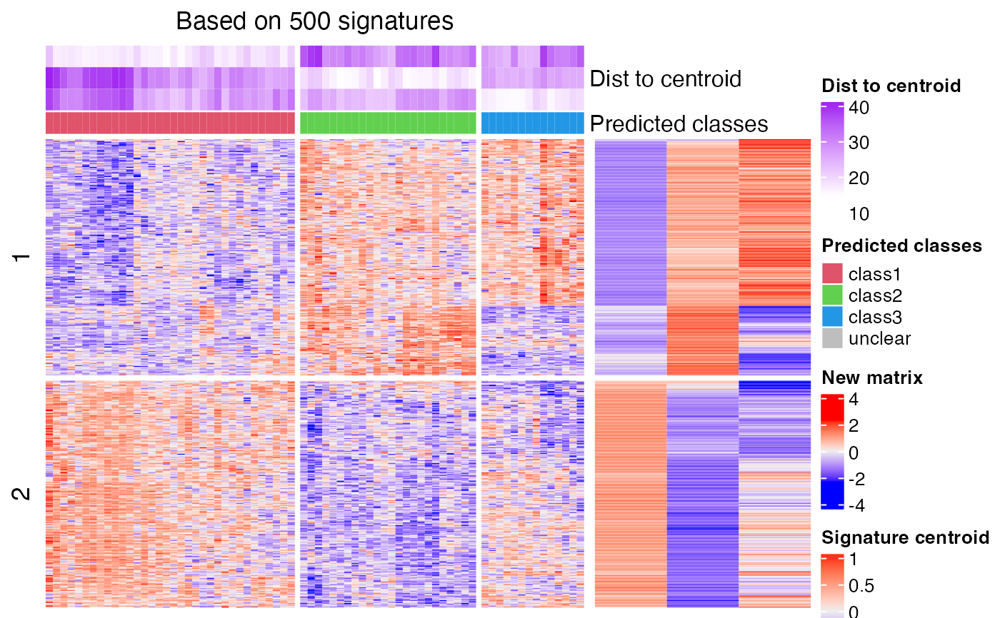

Predict classes for new samples based on cola classification
predict_classes-ConsensusPartition-method.RdPredict classes for new samples based on cola classification
# S4 method for ConsensusPartition predict_classes(object, k, mat, silhouette_cutoff = 0.5, fdr_cutoff = cola_opt$fdr_cutoff, group_diff = cola_opt$group_diff, scale_rows = object@scale_rows, diff_method = "Ftest", dist_method = c("euclidean", "correlation", "cosine"), nperm = 1000, p_cutoff = 0.05, plot = TRUE, col_fun = NULL, split_by_sigatures = FALSE, force = FALSE, verbose = TRUE, help = TRUE, prefix = "", mc.cores = 1, cores = mc.cores)
Arguments
| object | A |
|---|---|
| k | Number of subgroups to get the classifications. |
| mat | The new matrix where the sample classes are going to be predicted. The number of rows should be the same as the original matrix for cola analysis (also make sure the row orders are the same). Be careful that the scaling of |
| silhouette_cutoff | Send to |
| fdr_cutoff | Send to |
| group_diff | Send to |
| scale_rows | Send to |
| diff_method | Send to |
| dist_method | Distance method. Value should be "euclidean", "correlation" or "cosine". Send to |
| nperm | Number of permutatinos. It is used when |
| p_cutoff | Cutoff for the p-values for determining class assignment. Send to |
| plot | Whether to draw the plot that visualizes the process of prediction. Send to |
| col_fun | A color mapping function generated from |
| split_by_sigatures | Should the heatmaps be split based on k-means on the main heatmap, or on the patterns of the signature heatmap. |
| force | If the value is |
| verbose | Whether to print messages. Send to |
| help | Whether to print help messages. |
| prefix | Used internally. |
| mc.cores | Number of cores. This argument will be removed in future versions. |
| cores | Number of cores, or a |
Details
The prediction is based on the signature centroid matrix from cola classification. The processes are as follows:
1. For the provided ConsensusPartition-class object and a selected k, the signatures that discriminate classes
are extracted by get_signatures,ConsensusPartition-method. If number of signatures is more than 2000, only 2000 signatures are randomly sampled.
2. The signature centroid matrix is a k-column matrix where each column is the centroid of samples in the corresponding
class, i.e. the mean across samples. If rows were scaled in cola analysis, the signature centroid matrix is the mean of scaled
values and vise versa. Please note the samples with silhouette score less than silhouette_cutoff are removed
for calculating the centroids.
3. With the signature centroid matrix and the new matrix, it calls predict_classes,matrix-method to perform the prediction.
Please see more details of the prediction on that help page. Please note, the scales of the new matrix should be the same as the matrix
used for cola analysis.
Value
A data frame with two columns: the class labels (in numeric) and the corresponding p-values.
See also
predict_classes,matrix-method that predicts the classes for new samples.
Examples
# \donttest{ data(golub_cola) res = golub_cola["ATC:skmeans"] mat = get_matrix(res) # note scaling should be applied here because the matrix was scaled in the cola analysis mat2 = t(scale(t(mat))) cl = predict_classes(res, k = 3, mat2)#> The matrix has been scaled in cola analysis, thus the new matrix should #> also be scaled with the same method ('z-score'). Please double check. #> Set `help = FALSE` to suppress this message. #> #> * take top 500/500 most significant signatures for prediction.# compare the real classification and the predicted classification data.frame(cola_class = get_classes(res, k = 3)[, "class"], predicted = cl[, "class"])#> cola_class predicted #> 1 3 3 #> 2 3 3 #> 3 2 2 #> 4 2 2 #> 5 2 2 #> 6 3 3 #> 7 2 2 #> 8 2 2 #> 9 2 2 #> 10 2 2 #> 11 2 2 #> 12 2 2 #> 13 2 2 #> 14 2 2 #> 15 2 2 #> 16 2 2 #> 17 2 2 #> 18 3 3 #> 19 3 3 #> 20 2 2 #> 21 1 1 #> 22 1 1 #> 23 1 1 #> 24 1 1 #> 25 2 2 #> 26 1 1 #> 27 1 1 #> 28 2 2 #> 29 1 1 #> 30 1 1 #> 31 2 2 #> 32 1 1 #> 33 1 1 #> 34 1 1 #> 35 3 3 #> 36 2 2 #> 37 3 3 #> 38 3 3 #> 39 2 2 #> 40 3 3 #> 41 3 3 #> 42 3 3 #> 43 2 2 #> 44 2 2 #> 45 2 2 #> 46 1 1 #> 47 2 2 #> 48 2 2 #> 49 2 2 #> 50 2 2 #> 51 2 2 #> 52 3 3 #> 53 2 2 #> 54 2 2 #> 55 2 2 #> 56 1 1 #> 57 3 3 #> 58 2 2 #> 59 1 1 #> 60 2 2 #> 61 3 3 #> 62 1 1 #> 63 1 1 #> 64 1 1 #> 65 1 1 #> 66 1 1 #> 67 1 1 #> 68 2 2 #> 69 1 1 #> 70 1 1 #> 71 1 1 #> 72 1 1#> The matrix has been scaled in cola analysis, thus the new matrix should #> also be scaled with the same method ('z-score'). Please double check. #> Set `help = FALSE` to suppress this message. #> #> * take top 500/500 most significant signatures for prediction.# compare the real classification and the predicted classification data.frame(cola_class = get_classes(res, k = 3)[, "class"], predicted = cl[, "class"])#> cola_class predicted #> 1 3 3 #> 2 3 3 #> 3 2 2 #> 4 2 2 #> 5 2 2 #> 6 3 3 #> 7 2 2 #> 8 2 2 #> 9 2 2 #> 10 2 2 #> 11 2 2 #> 12 2 2 #> 13 2 2 #> 14 2 2 #> 15 2 2 #> 16 2 2 #> 17 2 2 #> 18 3 3 #> 19 3 3 #> 20 2 2 #> 21 1 1 #> 22 1 1 #> 23 1 1 #> 24 1 1 #> 25 2 2 #> 26 1 1 #> 27 1 1 #> 28 2 2 #> 29 1 1 #> 30 1 1 #> 31 2 2 #> 32 1 1 #> 33 1 1 #> 34 1 1 #> 35 3 3 #> 36 2 2 #> 37 3 3 #> 38 3 3 #> 39 2 2 #> 40 3 3 #> 41 3 3 #> 42 3 3 #> 43 2 2 #> 44 2 2 #> 45 2 2 #> 46 1 1 #> 47 2 2 #> 48 2 2 #> 49 2 2 #> 50 2 2 #> 51 2 2 #> 52 3 3 #> 53 2 2 #> 54 2 2 #> 55 2 2 #> 56 1 1 #> 57 3 3 #> 58 2 2 #> 59 1 1 #> 60 2 2 #> 61 3 3 #> 62 1 1 #> 63 1 1 #> 64 1 1 #> 65 1 1 #> 66 1 1 #> 67 1 1 #> 68 2 2 #> 69 1 1 #> 70 1 1 #> 71 1 1 #> 72 1 1# }